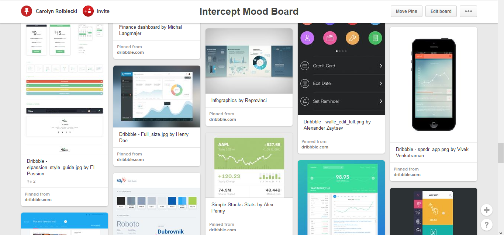
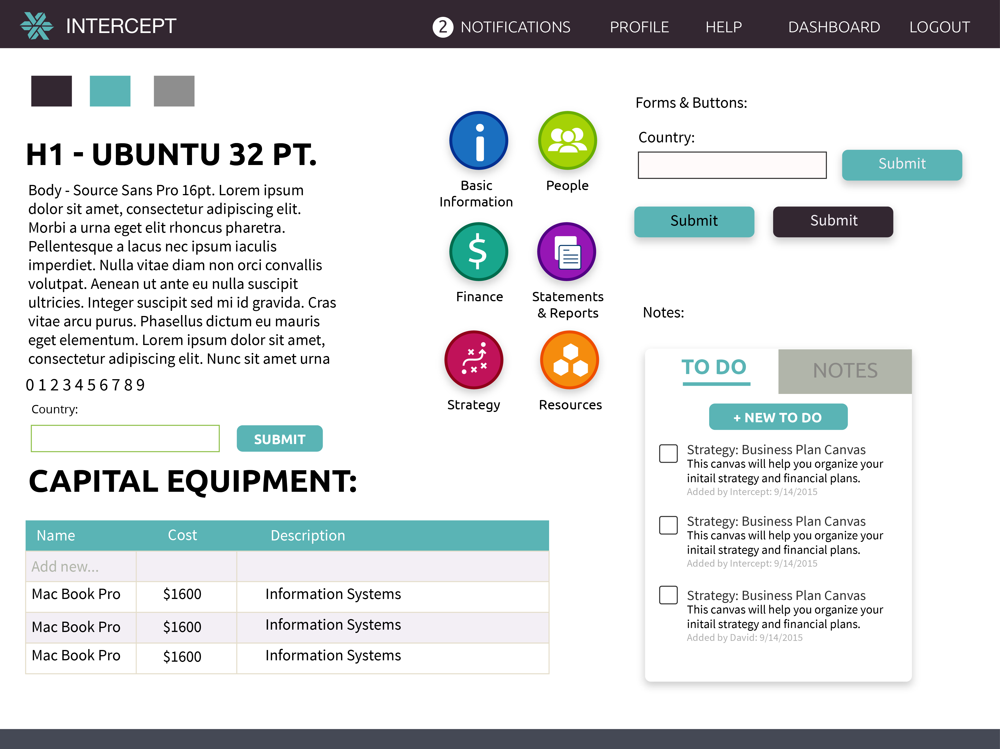

Deziner Software
Intercept is a software for creating business plans. Because the software is very complex and could easily be overwhelming, the client wanted a style that is approachable and inviting. I did the user interface for the screens.
Since the client wanted to have a friendly and approachable style for the application, I decided to use a colorful palette. I also decided to not use a full white background on the pages since the software is meant to be used for an extended period of time and could strain the users' eyes if the background was white. I used a sans serif font because its both approachable and easier to read on a screen. Because the software is so robust, I mocked up a couple of the key screens the client would need. Below is an example of what the dashboard looked like before the UX and UI changes.
After meeting with the client, I started gathering inspiration by creating a mood board with Pinterest. Since the web application I was creating the UI for was very robust and could come off as intimidating, I wanted to make sure to look for a friendly, approachable feel. Intercept is meant to be used by people in many different coutnries and in different languages so I wanted to make sure that the feel was universal. I looked towards flat and material design since it is current design trend by globaly recognized companies. It was also important to look at different data visualizations like graphs and charts since the software contained a lot of numbers and data. 
Next I developed a style tile to convey my concept I had for web application. I used Source Sans Pro for the body copy and Ubuntu for the header. I made sure to use Google web because the client did not want to have to pay for any fonts. I went for a more material design approach, making sure to keep the style clean since it could easily get cluttered looking with the amount of informatinon on some of the pages. The different category buttons for the menu gave be an opportunity to introduce more color into the platform. The platform was for people that wanted to start their own business, which usually comes with emotions of excitement and enthusiasm, so I wanted to mirror that feeling by using bright colors. 
The dashboard is how the program is organized. I created the icons to be simple and easily readable. Because the program is complex and has a lot of sub navigation levels, I wanted to keep the different sections its own color. That way the color could add another level of help for the user remember where certain information is located.